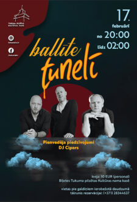

šeit ir dažādu mūzikas pasākumu saraksts:.
| Valentīndienas koncerts | Instasamka koncerts | Ballīte tunelī |
| Datums: 17. februāra plkst. 19:30 Vieta: Restorāns Neptūns, Jurmala, Latvija Kategorija: Mūzika |
Datums: 17. februāra plkst. 20:00 Vieta: FIRST МИР, Rīga, Latvija Kategorija: Mūzika |
Datums: 17. februāra 21:00 - 19. februāra 02:00 Vieta: Tukuma pilsētas Kultūras nams, Tukums, Latvija Kategorija: Mūzika |